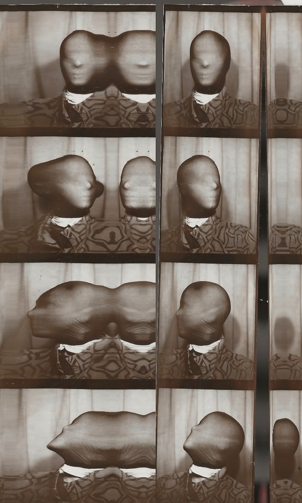
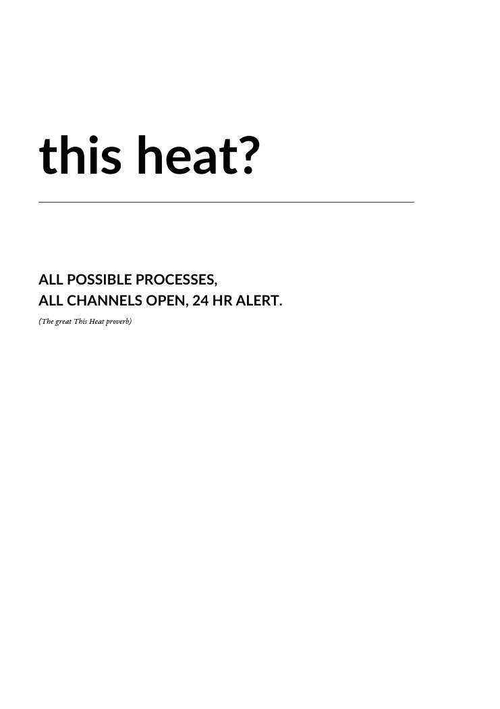

this heat?
this heat is a method
what the fuck is happening with this heat?
My engagement with the music of the radical British group This Heat goes back several years. It first entered my choreographic work through NEGATIVE AURA, where “Horizontal Hold” became the material for an experiment in movement. What began as a desire to dance to their music has developed into a much larger investigation of their methods, their politics, and the possibilities their work continues to open up.
This Heat were making music in a period of extreme political anxiety, not entirely dissimilar from our own. War, imperialism, nuclear annihilation, and the realities of first world over consumption permeate their recordings. But the radical character of their work cannot be located exclusively in its subject matter. It is also present in the ways they constructed it: through relentless collective experimentation, improvisation, tape manipulation, repetition, interruption, the refusal of genre and conventional musical forms. Their music does not simply describe or represent a world in crisis. Its very construction seems to register the instability of that world.
What I find so compelling about This Heat is not simply their rejection of convention, but their insistence on the possibility of constructing other ways of making music. That possibility was not abstract. It took shape in the decisions they made together, the methods they invented, and the ways those methods changed what could happen on the records. I recognize that impulse in my own choreography and compositions. QUADRANT and WEAVER are not attempts to dispense with structure, but to author it openly: to build conditions within which performers must negotiate, respond, and make something together that no single person could fully determine in advance. For me, the political significance lies in that act of construction. The structures organizing our bodies and our collective lives are not natural facts, even when they appear immovable. They were made, they can be intervened in, and they can be remade. This Heat's music doesn't offer a blueprint for another world. It insists, through its very practice, that other arrangements are possible.
With this heat?, these lines of inquiry begin to converge. I am interested not only in what This Heat's music meant in its original political moment, but in what it can do now. What happens when its procedures are brought into another medium, another body, another historical situation? How might its experimental methods continue to challenge the structures through which we make art, organize ourselves, and understand the world?
The March 2026 proto-performance was an initial attempt to investigate these questions through choreography, percussion, recorded sound, and moving image. It was not a reenactment of This Heat, nor an attempt to arrive at a definitive interpretation, but an experiment in what might happen when their music encountered my own working methods.
In October 2026, the BARN residency at BLOC in Bath, UK provided an opportunity to expand the experiment. Films, soundtracks, live percussion, and choreography became components of an increasingly elaborate performance apparatus, operating according to different compositional procedures and temporal relationships. The residency culminated in a public sharing that tested how these materials could function together, and how their relationships might generate new possibilities for performance. At the same time, archival research, writing, and musical reconstruction began to assume increasingly important roles in the project.
What has emerged is not a single performance but an expanding body of work encompassing choreography, music, film, and writing. Each develops through its own processes while informing and transforming the others. The project remains deliberately unresolved, continually incorporating new research, encounters, collaborations, and experiments. Rather than producing a definitive account of This Heat or reproducing their work, I am interested in putting their methods into circulation again, testing what they might make possible under different conditions, in the present.
MARCH / VIDEO WORKS


WORKING NOTES ON AN
UNFINISHED INVESTIGATION

Bath, October 2026. Working publication in its original A1 visual format, with revised text.
READ THE BATH WRITING / PDF ↗